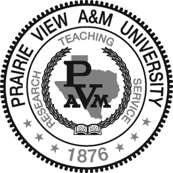

Computer Science Department
Prairie View A&M University
Welcome
Announcements
Position Announcement
Scholarship Announcement (CS Dept. is accepting scholarship applications)
Academic Programs
- Bachelors of Science (BS) in Computer Science.
- Master of Computer Science (MSCS).
- Master of Computer Information Systems (MSCIS).

Mission
The mission of the Department of Computer Science in the Roy G. Perry College of Engineering at Prairie View A & M (PVAMU) consists of three interrelated components:
- providing the highest quality instruction to the students,
- conducting leading-edge research in computer science and engineering,
- and providing leadership and service to our professional communities.
The Department offers three degree programs:
- Bachelor of Science Program (BS) in Computer Science which is accredited by the Computing Accreditation Commission of the Accreditation Board for Engineering and Technology (ABET).
- Masters of Science degree in Computer Science (MS CS)
- Masters of Science degree in Computer Information Systems (MS CIS).
Computer Science faculty and staff are committed to excellence and update the program to meet the present and future needs of industry and the society.
Degree Information
The Computer Science B.S. program is fully qualified by the Computing Accreditation Commission (CAC) of the Accreditation Board for Engineering and Technology (ABET). The curriculum is designed and evaluated using the joint recommendations of the Association for Computing Machinery (ACM) and the Computer Society of the Institute of Electrical Engineers (IEEE-CS). Our graduates have the necessary skills and knowledge to complete an advanced degree in computer science or to obtain and excel in a professional position. The undergraduate program in Computer Science leads to a bachelor of science (BS) degree.
The program emphasizes the development of the skills and analytical abilities necessary to specify, design, and develop computer-based solutions to complex systems problems. Students receive extensive instruction in all areas of computer science including operating systems and scientific, industrial and commercial applications programming.
Graduates of the Computer Science program possess qualifications for a myriad of job opportunities both in industry and in government such as Software Engineer, Programmer, Programmer-Analyst, Systems Analyst, Network Analyst, Project Leader, Project Manager, CIO Vice President. Our students are also prepared to meet the challenges of advanced degree programs. Employers who have hired our graduates include AT&T, IBM, EDS, General Electric, Nortel, Hewlett Packard, Boeing, Motorola, Raytheon, BMC Software, Lockheed-Martin, MCI, SPRINT, Microsoft, Federal Express, Alcatel, NASA, Texas
High School Preparation
The College of Engineering hosts summer programs such as the Computer Science Concepts Institute for High School students who are interested in engineering fields such as Computer Science . High School graduates entering the Computer Science program should have a solid background in the physical sciences and mathematics, an above average ability to conceptualize, a proficiency in oral and written communications, and an interest in the humanities. While in high school, these classes are recommended but all are not mandatory for entry:
Math: Algebra, Trigonometry, or Calculus
Science: Biology, Chemistry or Physics
English: Writing course or English Lit.
Computers: C or C++ programming (Optional)
For more information please contact us at:
Tel: (936) 261-9870
Email:xD@haha.com
Minoring
COMPUTER SCIECNE COURSES .......................................23 SCH
COMP 1214 Computer Science and Lab I
COMP 1224 Computer Science and Lab II
COMP 2013 Data Structures
COMP 2033 Assembly Languages
Nine Semester Hours of upper-division Computer Science courses
MATH COURSES...........................................................8 SCH
MATH 1124 Calculus I
MATH 2024 Calculus II
TOTAL ......................................................................31 SCH
Undergraduate
The Department of Computer Science is within the Roy G. Perry College of Engineering. All students seeking admission into the Computer Science undergraduate program must meet the undergraduate admission requirements of the university and the admission requirements of the College of Engineering.
For UNIVERSITY REQUIREMENTS please refer to the University Catalog for the most current University admissions requirements.
Students seeking admission to the Computer Science program at Prairie View A & M University should complete a university application for admission.
INSTRUCTIONAL ORGANIZATION
The Roy G. Perry College of Engineering is composed of six academic departments offering the degree programs listed below:
Degree Programs Degrees Offered
Chemical Engineering B.S.Ch.E.
Civil Engineering B.S.C.E.
Computer Engineering B.S.
Computer Science B.S.
Electrical Engineering B.S.E.E.
Mechanical Engineering B.S.M.E.
Computer Engineering Technology B.S.CET.
Electrical Engineering Technology B.S.EET.
Computer-Aided Drafting and Design Technology B.S.I.T.
Admission to the Roy G. Perry College of Engineering
Admission to the Roy G. Perry College of Engineering is based on the University's undergraduate admission requirements plus the following additional admission criteria for the College of Engineering. Students may be admitted to the College of Engineering in two ways: (1) directly into a major or (2) conditionally admitted. A student is admitted directly into a major only if all admission criteria are met.
First-time Freshmen - Engineering and Computer Science Majors
First-time freshmen will be evaluated on the basis of the following admission criteria that are applicable for the student:
- Students must meet the Prairie View A&M University admissions requirements.
- Students must present a SAT score of 930 (based on combined verbal and math scores only) or higher or a composite ACT score of 19 or higher.
- Must have a cumulative high school GPA of 3.0 on a 4.0 scale.
- Student must be in the top 25 percent of their graduating class.
- Students must have successfully passed or must be exempt from the THEA exam in all areas.
THEA requirements have no influence on the admission to the University; however students must satisfy this criterion to be admitted to the College of Engineering. Failure to meet this requirement will result in the student’s major status being changed.
As noted, students who meet these criteria will be admitted directly into a major. Those students that do not meet the criteria will need to have their records reviewed by their academic department and be considered on individual merits for conditional admission.
Conditional Admittance
Those first-time freshmen who do not meet the direct admission standards into the College and wish to be considered for conditional admission must meet the following criteria:
First-time Freshmen - Engineering and Computer Science Majors
First-time freshmen will be evaluated on the basis of the following admission criteria that are applicable for the student:
- Students must meet the Prairie View A&M University admissions requirements.
- Students must present a minimum SAT score greater than 820 (based on combined verbal and math scores only) or higher or a composite ACT score of 17 or higher.
- Must have a minimum cumulative high school GPA of 2.5 on a 4.0 scale.
- Student must be in the top 50 percent of their graduating class.
Students Entering with Transfer Credit
Transfer students include those from other units within Prairie View A&M University as well as those from other educational institutions. Transfer students external to Prairie View A&M University must furnish an official transcript to the Office of Admissions for evaluation of all college level work completed. Transfer students with less than 30 hours of transferable credit are admitted under the criteria for first-time freshmen.
Transfer students with 30 hours or more of transferable credit must meet the following requirements:
- Students must meet the Prairie View A&M University and the College of Engineering admissions requirements.
- Must have a ‘C’ or higher in all transfer courses.
- Must have a minimum cumulative GPA of 2.5 on a 4.0 scale in all math, science, and engineering courses.
Students who meet these criteria will be admitted directly into a major. Those students that do not meet the criteria will need to have their records reviewed by their desired academic department and be considered on individual merits for conditional admission.
Placement in an Engineering Major
Students meeting all admission criteria for entry directly from high school or for entry with transfer credit will be admitted as a program major: CHEG (Chemical Engineering), CVEG (Civil Engineering), CPEG (Computer Engineering), ELEG (Electrical Engineering), MCEG (Mechanical Engineering), CPSC (Computer Science), ELET (Electrical Engineering Technology), CPET (Computer Engineering Technology), and CADD (Computer-Aided Drafting and Design). If all criteria are not met, students who have decided on their major may be conditionally admitted: UCHE (Chemical Engineering), UCVE (Civil Engineering), UCPG (Computer Engineering), UELE (Electrical Engineering), UMCE (Mechanical Engineering), UCPS (Computer Science), UELT (Electrical Engineering Technology), UCPT (Computer Engineering Technology), and UCAD (Computer-Aided Drafting and Design). Students conditionally admitted can apply to their department for advancement after 30 hours of completed course work (see the above Conditional Admittance Section).
Along with meeting the general requirements of the University, students enrolled in the College of Engineering must maintain the following performance levels in order to satisfy degree requirements:
- Earn an overall grade point average of 2.0 or better in courses taken outside of the college and earn a grade of C or better in English, mathematics, and science courses.
- Earn a grade of C or better in each course taken within the College.
- Earn a grade of C or better in the prerequisite before advancing to the next level course in a sequence for English, mathematics, and science courses.
- Earn a grade of C or better in prerequisite courses before advancing to the next level course in College courses.
- Demonstrate professional standards and ethical conduct.
- Three-Attempt Rule: A student may not attempt a course at PVAMU in the College of Engineering more than three times and apply that course toward an engineering degree. Enrollment in a course for a period of time sufficient for assignment of a grade, including a grade of W, is considered an attempt.
Students who transfer from other colleges and universities should meet the University’s scholastic regulations and additional core curriculum requirements for engineering.
Summary of Undergraduate Admissions Requirements for Computer Science Program
Table 1: First-time Freshmen Requirements for Direct Admission to the Computer Science Program
| Academic Major | Meet PVAMU Admission Standards | High School GPA | SAT/ACT | High School Rank | THEA Passed |
| Computer Science | Yes | 3.00 | 930/19 | Top 25% | Yes (All subjects) |
Table 2: First-time Freshmen Requirements for Conditional Admission to the Computer Science Program
| Academic Major | Meet PVAMU Admission Standards | High School GPA | SAT/ACT | High School Rank | THEA Passed |
| Computer Science | Yes | 2.50 | 820/17 | Top 50% | No |
Table 3: Transfer Students Requirements for Direct Admission to the Computer Science Program
| Academic Major | Meet PVAMU Admission Standards | Transfer Grades | Transfer GPA (Math, Science, and Engineering) |
| Computer Science | Yes | "C" or greater | 2.50 |
Students seeking admission to the Computer Science program at Prairie View A & M University should complete a university application for admission.
Graduate
Application Information and Forms
- Requirements, Degree Plan, Course Descriptions: MS CS Program MS CIS Program
- Instructions for Applications
- Admission Application and Recommendation Letter Forms: Admission Application and Recommendation Form
- Assistantship Application Form: Word version and PDF version
- University Graduate Catalog: Graduate Catalog
- General financial aid information that graduate students must know and complete.
Contact Information
- Dr. Lin Li, Graduate Coordinator, Email: lilin@pvamu.edu Phone: (936) 261-9882
- Ms. Darla Karsteter, Graduate Administrative Secretary, Email:dakarsteter@pvamu.edu Phone: (936) 261-9874
Resources
Forms and Manuals
- Graduate Catalog
- Degree Plan Form: Word version and PDF version
- Candidacy Application Form: Word version and PDF version
- Master Thesis
- Master Thesis Manual: Word Version and PDF version
- Student and Advisor Agreement Form: Word version and PDF version (You must present this form signed by you and your advisor to Graduate Coordinator in order to register for Thesis)
- Computer Science Thesis Committee Form: Word version
- Computer Information Systems Thesis Committee Form: Word version
- Master Project
- Master Project Manual: Word version and PDF version
- Student and Advisor Agreement Form: Word version and PDF version (You must present this form signed by you and your advisor to Graduate Coordinator in order to register Project)
- Computer Science Project Committee Form: Word version and PDF version
- Computer Information Systems Project Committee Form: Word version and PDF version
- Computer Science Audit Form: Word version and PDF version
- Computer Information Systems Audit Form: Word version and PDF version
Thesis Manuals
Thesis Manuals: Word version and PDF version
Project Manuals: Word version and PDF version
Thesis Resources
Useful Links for Thesis
http://www.hawaii.edu/graduate/thesdiss/html/thesis.htm
http://www.cnr.uidaho.edu/frgrad/thesisvspaper.htm http://www.phys.unsw.edu.au/~jw/viva.html
http://www.acm.org/crossroads/xrds1-2/advice1.html
http://webster.commnet.edu/grammar/ http://www.dartmouth.edu/~compose/student/thesis.html
http://www.mallard.uiuc.edu/~loui/advisor.html
http://www.son.washington.edu/students/mnms_thesis_requirements.asp
http://www.angelfire.com/hi/XXXTHESIS/ http://www.learnerassociates.net/dissthes/
http://www.indiana.edu/~wts/wts/thesis.html http://www.learnerassociates.net/proposal/hintsone.pdf
http://www.geocities.com/CollegePark/Lab/2625/thesis.html
http://www.sce.carleton.ca/faculty/chinneck/thesis.html http://english.ttu.edu/uwc/thesis.html
http://www.unc.edu/depts/wcweb/handouts/thesis.html http://www.csuohio.edu/writingcenter/thesis.html
http://www.phys.unsw.edu.au/~jw/thesis.html
http://owl.english.purdue.edu/workshops/hypertext/ResearchW/thesis.html
http://www.cs.toronto.edu/~simsuz/msc.html
http://www.gmu.edu/departments/writingcenter/handouts/g_b_thes.html
http://owl.english.purdue.edu/workshops/hypertext/ResearchW/point.html
http://www.users.drew.edu/~sjamieso/Thesis.html http://www.mcgill.ca/gps/programs/thesis/guidelines/
http://iws.ohiolink.edu/~sg-ysu/thesis.html http://www.televar.com/~sedwards/essay8/thesis.htm
Contact
General inquiries can be made at cs@pvamu.edu.
Directory
| First Name | Last Name | Title | Phone | Office | |
|---|---|---|---|---|---|
| Akhtar | Lodgher Ph.D. | Professor | alodgher@pvamu.edu | 936-261-9859 | S R Collins Room 308 |
| Sherri | Frizell Ph.D. | Associate Professor | ssfrizell@pvamu.edu | 936-261-9873 | S R Collins Room 315 |
| Lin | Li Ph.D. | Associate Professor, Graduate Program Coordinator | lilin@pvamu.edu | 936-261-9882 | S R Collins Room 111H |
| JD | Oliver | Associate Professor | jdoliver@pvamu.edu | 936-261-9876 | S R Collins Room 326 |
| Myrtle | Tompkins | Associate Professor | mhtompkins@pvamu.edu | 936-261-9880 | S R Collins Room 304 |
| Yonggao | Yang Ph.D. | Associate Professor, Interim Department Head | yoyang@pvamu.edu | 936-261-9884 | S R Collins Room 111G |
| Kiranmai | Bellam Ph.D. | Assistant Professor | kibellam@pvamu.edu | 936-261-9883 | Collins Room 317 |
| Lei | Huang Ph.D. | Assistant Professor | lhuang@pvamu.edu | 936-261-9878 | Collins Room 314 |
| Yi | Lu Ph.D. | Assistant Professor | yilu@pvamu.edu | 936-261-9862 | Collins Room 323 |
| Iyengar | Ravi | Instructor, Undergraduate Program Coordinator | rniyengar@pvamu.edu | 936-261-9875 | S R Collins Room III J |
| Heejin | Lim Ph.D. | helim@pvamu.edu | 936-261-9870 | S R Collins Room 201 | |
| Sharon | Daniels | sedaniels@pvamu.edu | 936-261-9870 | S R Collins Room 201 | |
| Darla | Effinger | Administrative Secretary | daeffinger@pvamu.edu | 936-261-9874 | S R Collins Room 111J |
| La'Cheverjuan | Bennett | System Analyst | lmbennett@pvamu.edu | 936-261-9881 | S R Collins Room 111I |